Sborex is a graphical flowchart execution engine that has extensive integration capabilities powered by embedded Apache Camel.
Sborex may be seen as a visual Apache Camel route editor that represents the data flow and transformations as an executable sequence of graphical elements.
Additionally, Sborex provides the means of creating a web interface for the users to interact with the processes.
Basically, Sborex extends the visual BPMN language by making the User Tasks to become web pages, and the Messages to be Apache Camel Endpoints.
This document is preliminary and is composed by the Sborex developer to provide some hints on how to create one's own microservices or applications.
At this stage of the Sborex platform development it would be easier if you are familiar with Apache Camel and some basics of BPMN or some of the existing BPMN execution engines like Camunda or Flowable. In the future Sborex aims to be controlled visually and intuitively without any long learning curve ("low code" / "no code").
This document refers to the Proof Of Concept distribution described here. It will help if the system is started up and running on the localhost:8585 and a user "fedd" is logged in: some links in this doc point to the process editor.
Please join our subreddit to discuss questions and share the ideas:
Our SubredditA process, when started, has data associated with every process instance. The data is persisted and as for today it doesn't have to follow any predefined schema. It is accessible in scripting and templating contexts of the processes as nested key-value maps. It may be used to search and sort the process instances running in the system.
The data keeps being stored and available for retrieval after the process instance ends.
A running process has a kind of data that is not persisted but kept only in memory for the time the process is performing its steps, between the waits.
This kind of data appears from external sources, can be accessed, modified with scripts and services and, if needed, persisted by explicitly associating it with the persisted process instance data.
Steps correspond to BPMN elements which are shapes on the flowchart and arrows between them.
Steps are executed one by one until a BPMN element that commands to pause the execution — a Wait Step — is encountered, or until there are no BPMN elements left.
If there is a fork in the process definition, so that there are several BPMN elements following the current one, the subsequent Steps are executed in parallel — additional Java threads are started.
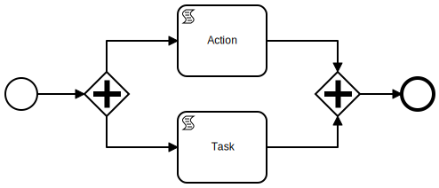
We call these groups of Steps the Leaps. So each Leap lasts
The concept of Leaps is somewhat similar to "Transactions" in other existing BPMN implementations.
The Operational Data exists throughout the Leap. It is duplicated for parallel execution threads, merged back if needed and discarded at the Leap end unless persisted explicitly.
The Process Instance is called the Sequence. If the Sequence stops at some Waits, those Waits are called the Sequence Status. If the Sequence has ended, its Status is empty.
The Sequence Data is that Persisted Data described earlier.
The Flowcharts of the Process Definitions, or the Diagrams, whatever you may call them, is a set of interconnected and standalone elements placed on canvas, which mostly conform with BPMN standard; but besides that, there are also some additional Sborex-specific attributes to the process definitions, which are Views, Beans and Resources.
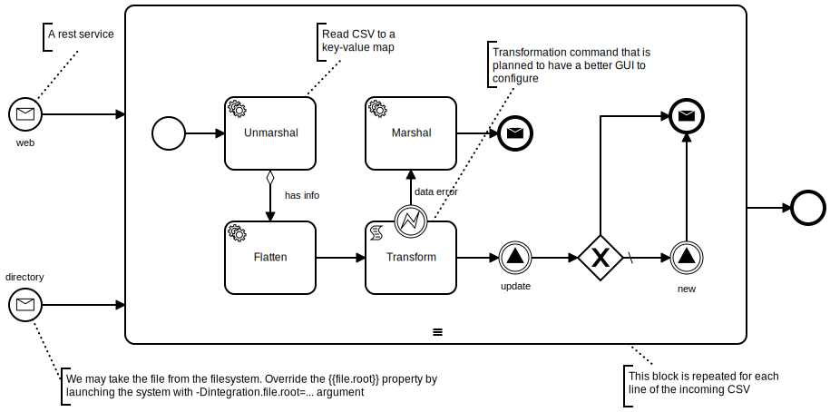
The Process Definition may be thought of as a Class with an algorithm that defines its methods and the lifecycle.
The running Process — the Process Instance — with its associated data looks like an Object in the object oriented paradigm.
You may create a Process Definition from a root page on http://localhost:8585/, by providing a New Process Code and starting to edit the new Draft.
Alternatively you may save an existing Process Definition as Draft and edit it.
Deploy button should make the Process Definition startable.
There's no (user friendly) way to load a BPMN file currently.
A Process Definition may have its own Views, which are basically the web page templates. We may provide a way to display the user the process instance data in a human-readable manner, designing a nicely looking page with variable placeholders that will be replaced (on server side) with the data associated with the process instance.
The template language used to define a View is
MVEL.
Besides a couple of global variables, the process instance object is available with the name
sequence, and the data associated with the process instance is retrieved
using the field data, e.g. sequence.data.
Process Definition Views are accessible via web by the Process Definition Code in the URL, for example, http://localhost:8585/register opens up a default View of the register process definition.
A Process Definition may have multiple variants of Views. To create a View variant press + button in the process
definition View editor and define a new View with a unique Code. The Process Instance or Process Definition Views
are available by specifying a variant parameter looking like this:
http://[server][:port]/[processCode]?variant=[viewCode].
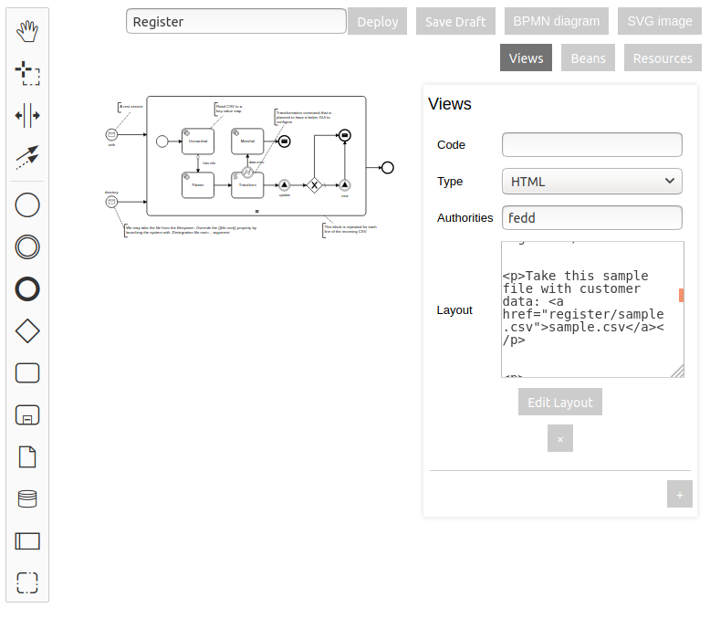
Despite being defined on a Process Definition level, this type of object becomes globally available to the scripts and templates throughout the system.
This may change in the future to include the Process Definition name into the object name.
The Bean Definition currently contains the Javascript code that creates a Java object.
This will become visually configurable in the future.
You may create any type of object that will be instantiated upon the system startup and kept always in memory. This is useful for example, for preconfiguring some of the Apache Camel endpoints that can't be created just with the URL.
If the bean created happens to be an Apache Camel Component, it will also be added to the component registry under that name.
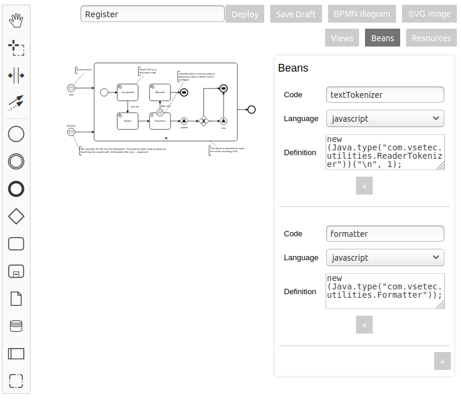
These are the static web resources that the system will serve intact by the address [process code]/[resource code].
You can put some small images, files or icons here. This is not the best place to put big byte arrays like videofiles as these resources are stored right in the Process Definition, and it may become unmanageably big.
The example below defines a file resource that is available at http://localhost:8585/register/sample.csv address:
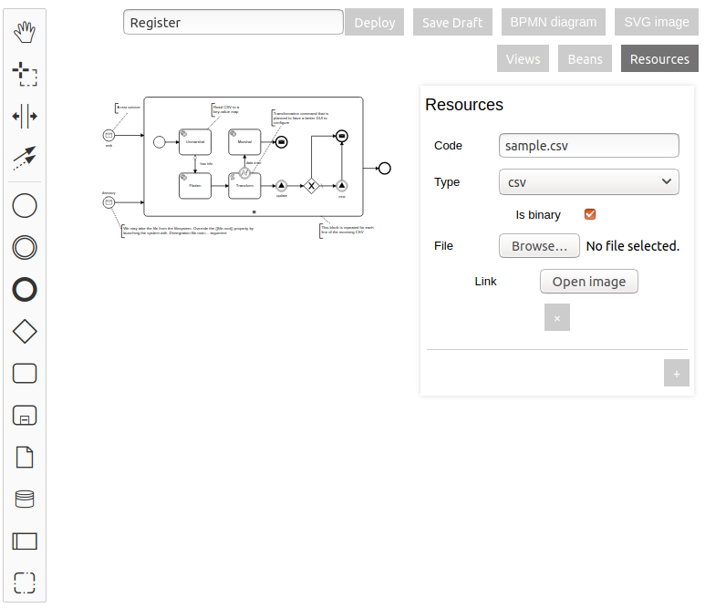
If you call the process session, it will become a Session Process. This process is started automatically for each new web session — when a new user comes — and its default View is available at a web root, for example, http://localhost:8585/.
This process is responsible for storing the current user permissions as its Persisted Data. The Persisted Data variable
name for this is permissions and it has to be a String or a
collection of Strings with the user name and the names of the user's roles or groups.
The system will compare the required permissions with the actual permissions of the current user.
As mentioned in other places, to populate or display the permissions you may access this variable with the expression
sequence.data.permissions, which works both in Javascript and MVEL scripts and templates.
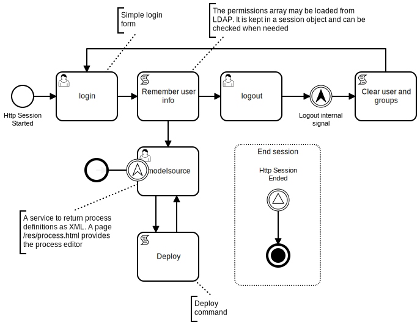
The Process Definition editor allows a user to place elements on a flowchart, connect them with each other and specify their configuration. This is done with the mouse and context menus. When you click an element, the wrench symbol sets the generic type and modifier of an element, and the gear symbol invokes the specific configuration menu.
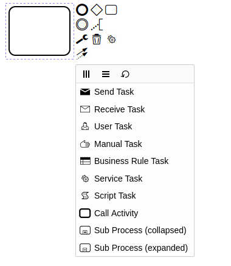
There are three main types of shapes on BPMN flowcharts, which are Tasks, Gateways and Events, and Sequence Flows connecting them. They are drawn as rectangles, diamonds, circles and arrows.
It is an arrow that connects two elements and defined the sequence of execution.
The element is configured with the following field:
It is a MVEL expression. The execution will stop and not proceed if it is false.
Events are represented by circles with a symbol inside. Events can be catching (unfilled symbol) and throwing (filled event symbol). Events can also be starting, intermediate, boundary and ending.
Catch Event waits until something external proceeds the execution, or in case of Start Catch Events, starts the new process instance. The Catch Events have some Operational Data taken from outside of the process.
Boundary Catch Events are like the Intermediate but they are attached to some Task element.
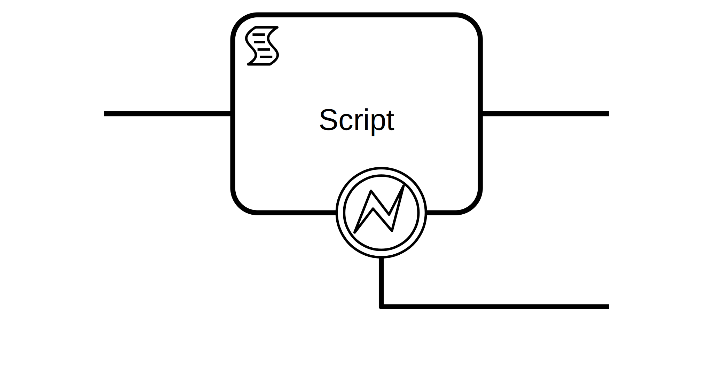
Boundary Catch Events are activated when this Task is activated and stop waiting when the Task is completed and the execution moved forward. If the host Task is a Wait, the Boundary Events may or may not, as per configuration, cancel the host Task's wait upon receiving the Event.
This is the main element for integration Sborex processes with external systems. In Message Event you basically invoke an Apache Camel Endpoint.
As you can guess, the Message Catch events are the Consumers, and the Throw Events are the Producers in terms of Apache Camel.
When the Message Catch Event is invoked by Apache Camel, the Apache Camel
Exchange
is put into Operational Data with the name exchange,
so you can access and modify data in scripts and services during the current Leap.
See the examples in the register process of the trial POC app.
The element is configured with the following fields:
The main Message Event configuration parameter is URL.
For the list of available URL templates and external systems available for integration you may inspect the Camel Component List.
Please note that the version currently embedded in Sborex is 2.24.0, so pay attention when reading the Camel docs.
Aside of a couple of custom built Components, only the Core Components are available in the POC version. But knowing Java it's not that hard to add more :)
The URL will be composed visually in the future.
This is a configuration field for Intermediate Message Catch Event only.
There can be a lot of Process Instances that are paused on the Intermediate Message Catch Event with the same URL, at least because they are the instances of the same Process Definition.
In this field we may put an expression that will be evaluated upon the process reaching this element. The resulting handler will be stored in the database.
This is a configuration field for Intermediate Message Catch Event only.
There can be a lot of Process Instances that are paused on the Intermediate Message Catch Event with the same URL, at least because they are the instances of the same Process Definition.
In this field we may put an expression that will be evaluated when Apache Camel receives new data for this endpoint URL. Then the system will look for the process instances that are waiting this endpoint and that have the matching Existing Key, and proceed only those process instances.
Signal Throw Events are used to start the processes that have a Start Signal Catch Event, or to proceed the processes that are paused waiting on the Intermediate Signal Catch Event.
Signals are named; only those Catch Events that has the same signal name will be invoked.
See the POC register process for examples of throwing events, and the POC customer process for catching. Note how the Signal Name templates contain the customer id reference to create the Process Definition specific Signal Names.
The Operational Data will be available to the processes started or proceeded by the Signal. The steps taken in the other processes are considered to be executed in the same Leap.
The POC app contains some examples of signals (fix the links if the POC isn't running on localhost:8585):
The element is configured with the following field:
This is a MVEL template of a signal name, which means that for the Catch Events we may specify a signal name that will contain some process-specific data, and at the moment of Throw we may construct a name and only the process instances which are awaiting for the signal of that name will be affected.
Look how register process signals the customer to proceed by including the customer id in the Signal name.
After the signal is sent two variables are created in the Operational Data,
emit.proceeded and emit.started,
and they are set, accordingly, if the signal was caught by some existing process and if some new process instance
was started.
You may see how we check the emit.proceeded variable to choose
execution path in an Exclusive Gateway (a diamond with X symbol) in the
register
process.
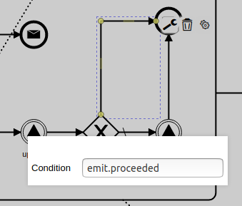
Out of the BPMN standard, Errors, Excalations and Timers are implemented. Timers aren't configurable from the visual editor yet.
Depicted as diamonds, the gateways define the path forks with the decision which way the execution will go.
From left to right, these are Exclusive, Parallel, Inclusive and Event-Based Gateways, Thew work as BPMN standard for Gateways implies.
The path conditions are set with MVEL expression in the arrows (called Sequence Flows in BPMN) outgoing from the diamonds.
The POC app contains some examples of gateways (fix the links if the POC isn't running on localhost:8585):
Two of the processes are started automatically every time the system starts, this is for test purposes.
The main building block for the BPMN diagram is a Task that is drawn ad a rectangle with a symbol in its corner.
In Sborex, the Tasks may be either waiting or non-waiting. The non-waiting tasks are executed in the same Leap; the waiting Tasks stop execution and start waiting for some external input.
As per BPMN standard, Tasks can be configured to repeat themselves or execute several times simultaneously in parallel threads.
Tasks also can have Boundary Catch Events parasite on them.
The POC app contains some examples of processes with tasks to test the multi-instance features (fix the links if the POC isn't running on localhost:8585):
The Tasks can be repeated or multiplied to run in parallel:
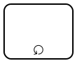
The Tasks that are configured as multi-instance or looped have additional configuration items:
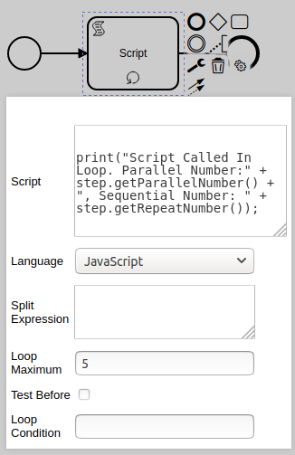
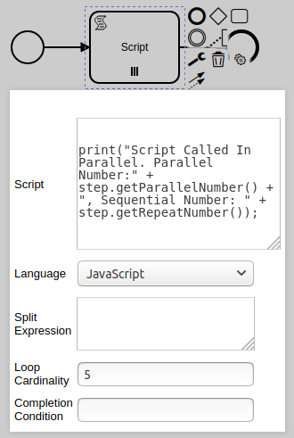
This is an Apache Camel Split
XML definition: the <split> element internals without
<to> element, see the
examples.
This Split setting operates with the Exchange that is currently in Operational Data during execution. The repeated or parallelized Task instance will have its own Exchange with one chunk of the original data as its message. (These are all Apache Camel terminology.)
Remember, the Split Expression has to be an XML snippet. See example in the register process where we split a big CSV file by lines and repeat a SubProcess for each line. (See how we are invoking our own custom ReaderTokenizer Bean that we have defined for the "register" process.)
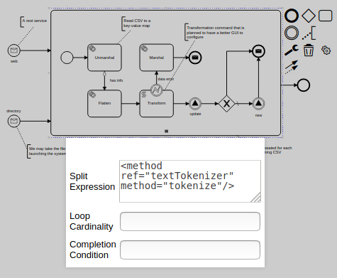
The split expression will be edited visually in the future.
It is an expression that evaluates to the maximum number of repetitions or parallel instances.
It is a boolean expression that has to be true for the loop to continue its iterations. It is set for the looped Tasks (with the circular arrow modifier sign)
It is a boolean expression that says whether the previously mentioned Loop Condition has to be checked before the iteration instead of after. It is set for the looped Tasks (with the circular arrow modifier sign)
It is a boolean expression that has to be true for the Task to continue its iterations or parallel executions. It is set for the Multi-Instance Tasks (with the hambuger modifier sign, see the picture below)
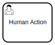
A manual action task that provides a web page for the user to complete the task.
User Task is a Wait Step.
User Task View is displayed when a GET request is made to the system with the Wait Step id in the URL.
User Task View is completed when a PUT or POST request is made to the system with the Wait Step id in the URL. An Exchange with an Incoming Message of the type HttpMessage will be put into Operational Data as an exchange.
In some cases the User Task Name can be used in the URLs to invoke a User Task, which will be documented later.
The element is configured with the following fields:
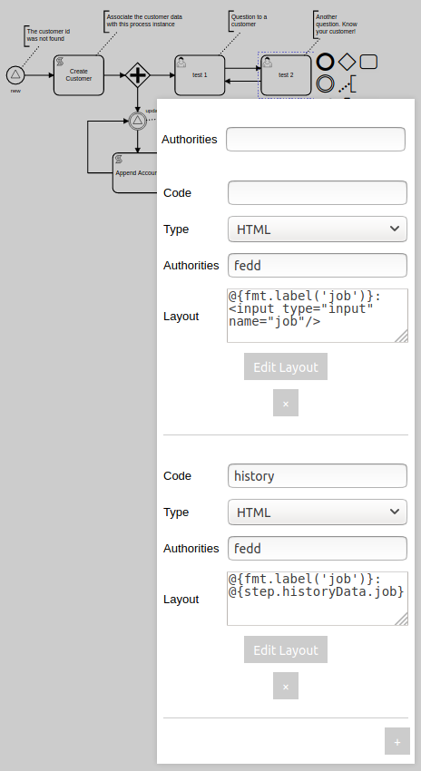
This is a MVEL expression or a comma separated list of strings that represent the authorities; this may be a user name, role names or group names.
This list of required authorities is compared to the current Session user permissions
when the User Task is being completed - i.e. it's View is called with the
PUT or POST
methods. There should be al least one match in order to proceed the process.
This is actually not a field but a group of fields that configures several Views of the User Task.
A User Task may have multiple Views, which are basically the web page templates. We may provide a way to display the user the process instance data in a human-readable manner, designing a nicely looking page with variable placeholders that will be replaced with the data associated with the process instance.
As in the other places, the template language used is MVEL.
Besides a couple of global variables, the process instance object is available with the name
sequence, and the data associated with the process instance is retrieved
using the field data, e.g. sequence.data.
Information about the Step is available via step variable in the template.
To create a View variant press + button in the User Task configurator and define a new View with a unique Code.
Each View has its own Authorities field that should contain the list of the user, role or groupd names that
are allowed to open this View (with the plain GET method).
The User Task steps waiting for execution each have their own unique id in the form of UUID. We see the User Task Views by specifying the Wait Step id in the URL.
Which View template will be used is controlled by the ?variant=viewCode query
parameter in the URL.
The View can not only be a HTML page or snippet, but actually anything. The Layout configuration field contains a MVEL template, and it may actually render into data of any type. See how the "modelsource" User Task of the session process returns an XML that it takes from the Sborex API.
The View layout will be edited visually in the soon future. Press "Edit Layout" button to explore the visual editor
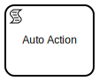
An automated action task that runs a script on some interpreted language. Script Task is not a Wait Step, it will pass through in the same Leap.
As the Script Task is executed, its result is put into Operational Data
as a result variable.
The element is configured with the following fields:
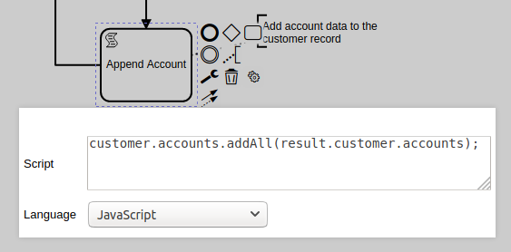
Actual code snippet to run.
The following variables are available in scripts:
sequencestepengineCurrently two languages are supported:
Here's an example of the key-value structure transformation using the magic of MVEL in the register process:
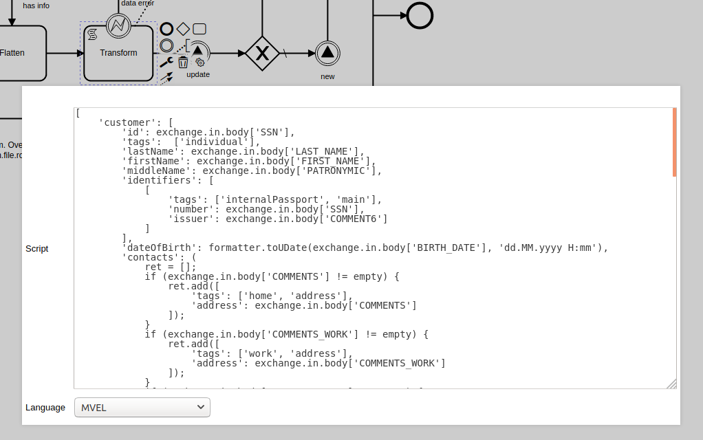
The transformation script will be edited visually in the future.
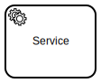
An automated action task that runs some Apache Camel service. Service Task is not a Wait Step, it will pass through in the same Leap.
This Task affects an exchange that should be
present in the Operational Data.
The element is configured with the following field:
This is an Apache Camel Processor XML definition.
This is actually a snippet of an Apache Camel XML route definition, which in turn can invoke a lot of useful Processors, Data Formats, languages and anything else.
See example in the register process where we unmarshal a CSV text putting it into a key-value map structure:
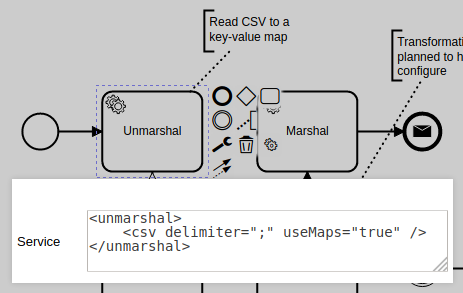
The service configuration will be edited visually in the future.
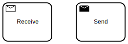
The Message Tasks are the same as the Message Events: the Receive Message Task is a Wait Step, the Send Message Task is proceeded immediately.
These tasks are configured the same way as Message Events, except that as other Tasks these elements may be Looped, Multi-Instance and have Boundary Events attached to them.
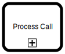
This element invokes another Process Definition by its code. The process is started in the same Leap and has the same Operational Data. It may finish in the same Leap and proceed if there are no Wait Steps inside the called Process, otherwise it will wait and be a part of the Process Status until the nested process Waits are all proceeded.
Like all Tasks this element may be Looped, Multi-Instance and have Boundary Events attached to it.
The element is configured with the following field:
It is a code of another process that will be called.
This plain text field will be improved to help the user to choose the Process Definition.
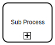
This element allows to define another Process Definition right in this Provess Definition. This SubProcess is started in the same Leap and has the same Operational Data. It may finish in the same Leap and proceed if there are no Wait Steps inside the called Process, otherwise it will wait and be a part of the Process Status until the nested process Waits are all proceeded.
By defining some set of Elements inside a SubProcess we can make this group to be Looped, Multi-Instance and have Boundary Events attached to it.
In the POC, the whole central part of the register process is a repeatable SubProcess:
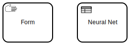
These BPMN elements don't work yet.
The Manual Task may be used for defining User Forms instead of the free form html templates. The Business Rule Task will invoke a neural network.
We've written some Components of our own to ease the development.
Unlike the standard LDAP Component, our own LDAP component doesn't require any object to be pre-created; we may define the LDAP queries simply with the URL.
Our experimental SIP should be sufficient to create any SIP proxy or server but is not tested.
You are invited to improve this project.
MVEL expressions and MVEL templates are related but different.
MVEL expressions evaluate to something, they have a resulting value of some datatype - string, number, date, boolean.
Template is a plain text that may suddenly
have "orb tags" here and there throughout the text. The tags look like
@{this} and contain MVEL
expressions or other commands like @if{} or
@foreach{},
and their result is concatenated with the surrounding text.
So templates are mostly evaluated to text, or strings. BUT if your template contains
ONLY the @{orb-tag} and doesn't have any text
preceding or following the tag, the
template may evaluate to a number or date, or boolean, whatever you write in your
tag.
Pay attention where the doc says you should use template or expression.
However if the doc says you should use script and the system allows you to choose a scripting language, you may choose either Javascript, or you may choose MVEL, and in the latter case you should use MVEL expression (not template).